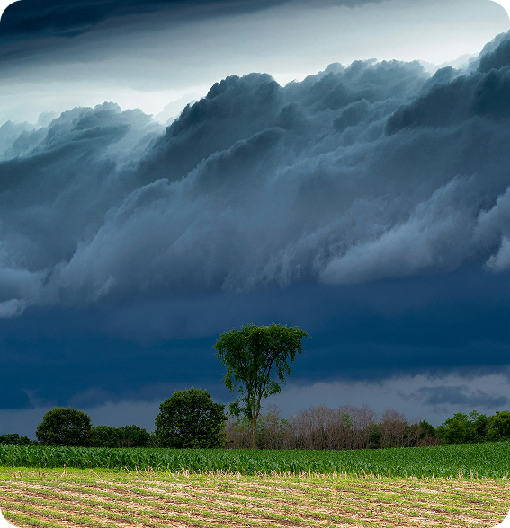
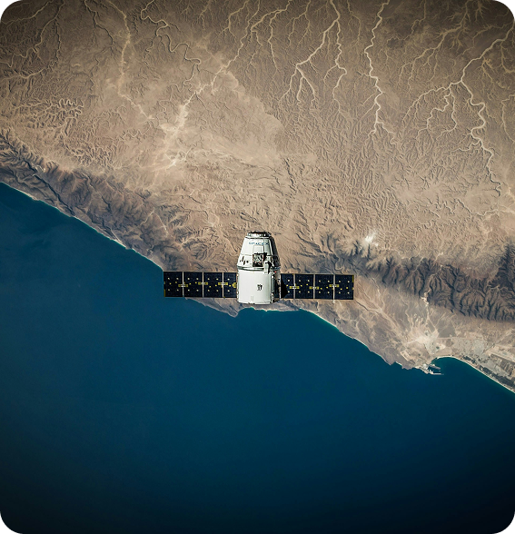
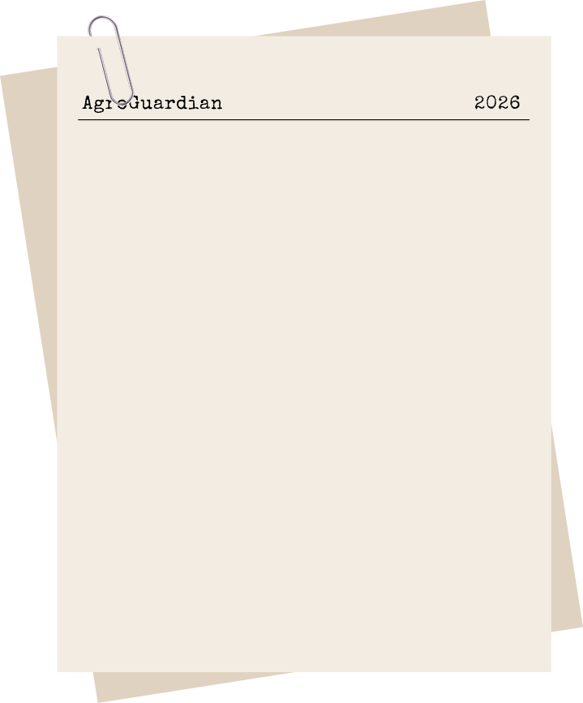
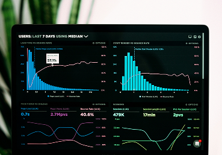
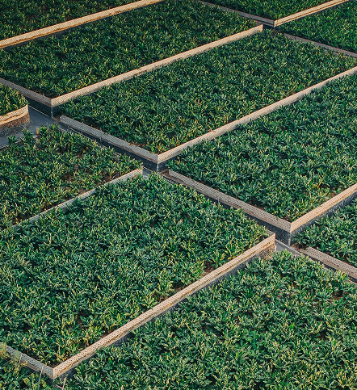
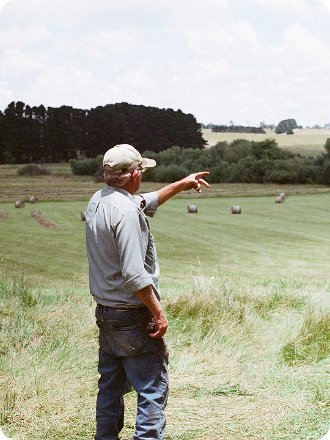

Conectamos inteligência orbital e análise preditiva para você gerenciar riscos e agir antes que as perdas aconteçam.
Navegue pelas seções abaixo e entenda como transformamos tecnologia em segurança para o campo.


Mudanças climáticas geram incertezas extremas no campo. Secas repentinas e pragas inesperadas destroem meses de trabalho e investimentos agrícolas.
Sem avisos prévios, o produtor rural enfrenta quebras de safra severas, resultando em prejuízos financeiros gigantescos e desperdício de recursos.


Unimos dados de satélites orbitais e sensores IoT(Internet das Coisas) em tempo real para monitorar a saúde do solo e da cultura.
Algoritmos preditivos transformam essas informações climáticas em um índice de estresse para antecipar riscos antes que eles aconteçam.

Nosso objetivo é eliminar a imprevisibilidade do campo, entregando alertas preventivos automáticos para proteger a produtividade das lavouras.
Buscamos garantir estabilidade financeira ao produtor através de decisões baseadas em dados históricos e análises ambientais precisas.



A plataforma atende produtores rurais de médio e grande porte que buscam inovação e segurança para suas terras.
Cooperativas agrícolas e gestores de agronegócio utilizam nossos dados estratégicos para otimizar operações e proteger investimentos de terceiros.